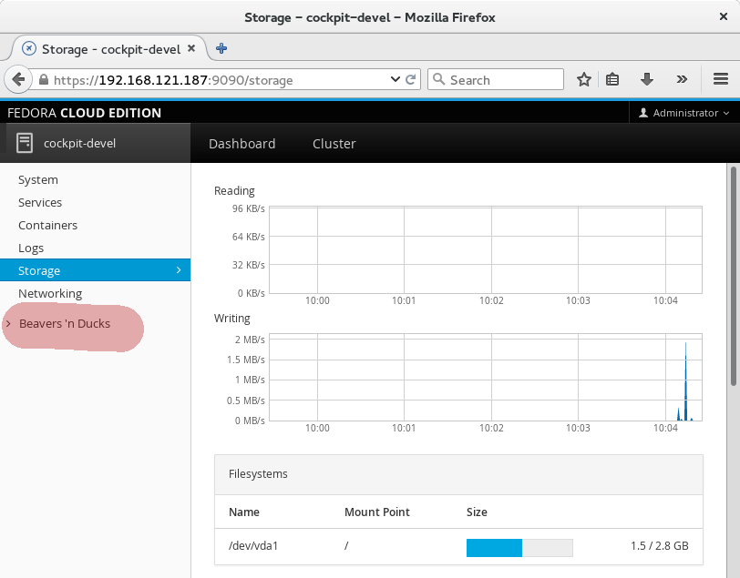

Starting with Cockpit release 0.79 you can use Vagrant to bring up a VM in which you can test or develop Cockpit. The VM is isolated from your main system so any system configuration you change via Cockpit will only happen in the VM.
The Vagrant VM mounts the Cockpit package assets from your git repository checkout, so when you make on the host system, you can refresh the browser and immediately see the resulting changes. For changes to C code, the Cockpit binaries would have to be rebuilt and testing via Vagrant won’t work.
Getting Started
To start, you’ll need Vagrant. On Fedora I use vagrant-libvirt. In addition keep in mind that on
vagrant-libvirt requires root privileges, so you’ll need to use vagrant with sudo.
$ sudo yum install vagrant vagrant-libvirt
Next, in a copy of the Cockpit git repository, you run vagrant up:
$ git clone https://github.com/cockpit-project/cockpit
$ cd cockpit
$ sudo vagrant up
The first time this runs it’ll take a while, but eventually you’ll have a Vagrant VM running. When you do this step again, it should be pretty fast.
The VM will
listen for connections on your local machine’s http://localhost:9090, but
even though you’re connecting to localhost it’ll be Cockpit in the VM you’re talking to.
If you already have Cockpit running on your local machine, then this won’t work, and you’ll need to use the IP address of the VM instead of localhost. To find it:
$ sudo vagrant ssh-config
Two user accounts are created in the VM, and you can use either one to log into Cockpit:
- User: “admin” Password: “foobar”
- User: “root” Password: “foobar”
Testing a Pull Request
If there’s a Cockpit pull request that you’d like to test, you can now do that with the Vagrant VM. Replace the 0000 in the following command with the number of the pull request:
$ git fetch origin pull/0000/head
$ git checkout FETCH_HEAD
The pull request can only contain code to Cockpit package assets. If it contains changes to the src/
directory, then the pull request involves rebuilding binaries, and testing it via Vagrant won’t work.
Now refresh your browser, or if necessary, login again. You should see the changes in the pull request reflected in Cockpit.
Making a change
You can make a change to Cockpit while testing that out in your Vagrant VM. The changes should be
to Cockpit package assets. If you change something in the src/ directory, then binaries will have
to be rebuilt, and testing it via Vagrant won’t work.
I chose change some wording in the sidebar in pkg/shell/index.html:
<a data-toggle="collapse" data-target="#tools-panel" class="collapsed" translatable="yes">
- Tools
+ Beavers 'n Ducks
</a>
And after refreshing Cockpit, I can see that change:

The same applies to javascript or CSS changes as well. In order to actually contribute a change to Cockpit you’ll want to look at the information about Contributing and if you need help understanding how to add a plugin package you can look at the Developer Guide.
Bringing the Vagrant VM in sync
After each Cockpit release, there will be new binary parts to Cockpit. In order to continue to use the Vagrant VM, you’ll need to rebuild it. A message like this should appear when that’s necessary.

Rebuild the Vagrant VM like this:
$ sudo vagrant destroy
$ sudo vagrant up
Troubleshooting
On Fedora, FirewallD got in the way of Vagrants use of NFS. On my machine, I had to do this to get it to work:
$ sudo firewall-cmd --set-default-zone=trusted